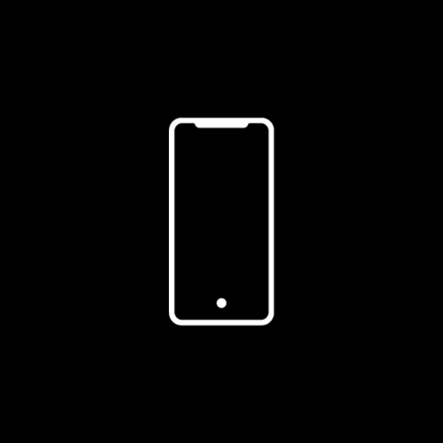
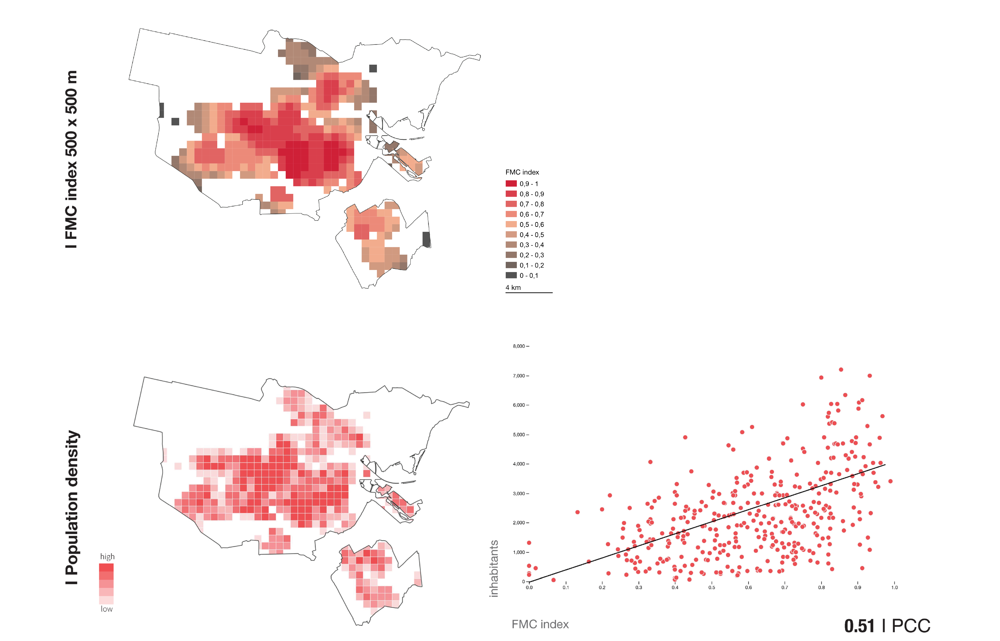
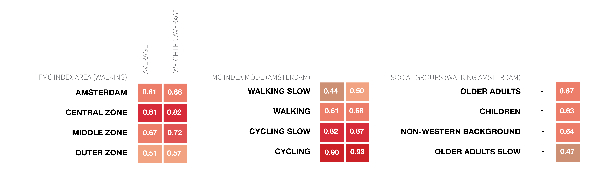

rotate your phone
Case study
Scroll through the slides


Method
Scroll through the process


Results
Dominant accessibility patterns

Travel speeds
Walking Slow
Walking
Cycling Slow
Cycling
Population groups

Overall scores
